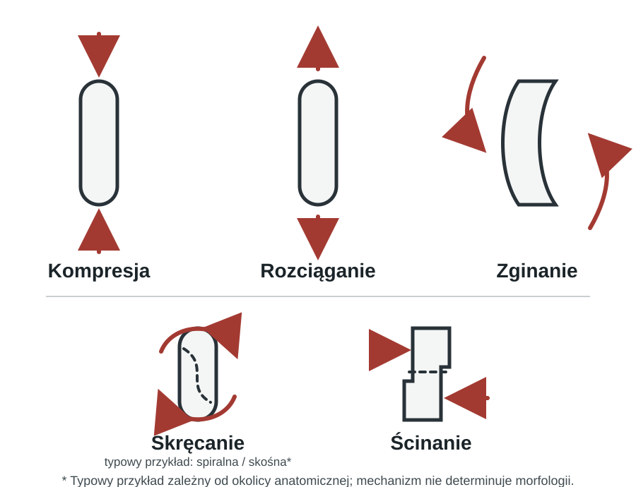
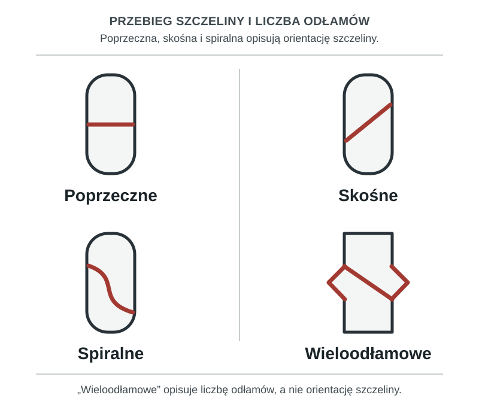

Złamania — mechanizmy i klasyfikacja
Złamanie jest zaburzeniem ciągłości struktury kości (U.S. National Library of Medicine 2026). Można je opisać jednocześnie na kilka sposobów: przez mechanizm urazu, wygląd szczeliny, położenie odłamów, lokalizację i stan tkanek miękkich. Te opisy uzupełniają się, ale nie tworzą jednego uniwersalnego systemu klasyfikacji.
Czym jest złamanie
Określenia takie jak zamknięte i otwarte odnoszą się do stanu skóry i tkanek miękkich. Zmęczeniowe, patologiczne i osteoporotyczne opisują natomiast kontekst powstania lub właściwości kości. Okołoprotezowe i typu „zielonej gałązki” wskazują na szczególną sytuację kliniczną albo wzorzec urazu. Nie należy traktować tej listy jako jednego formalnego kodu klasyfikacyjnego; system AO/OTA porządkuje przede wszystkim cechy anatomiczne i morfologiczne złamania (Meinberg et al. 2018).
Jedno złamanie może być równocześnie opisane przez lokalizację, morfologię, przemieszczenie i stan tkanek miękkich.
Jak dochodzi do złamania
Złamanie może być następstwem urazu bezpośredniego lub pośredniego. Może też powstać po urazie niskoenergetycznym albo po niewielkim obciążeniu — lub bez rozpoznawalnego urazu — gdy kość jest osłabiona albo zmieniona chorobowo.
Osobną sytuacją jest złamanie zmęczeniowe, do którego mogą prowadzić sumujące się mikrourazy (U.S. National Library of Medicine 2026).
Mechanizm urazu a charakter złamania
Do złamania dochodzi, gdy na kość działa nadmierne obciążenie. Można je opisać jako kompresję, dystrakcję, ścinanie lub rotację; w rzeczywistym urazie siły te mogą działać łącznie.
Mechanizm pomaga rozumieć możliwy wzorzec urazu, ale nie wyznacza go w sposób bezwzględny. Przykładowo, AO opisuje w obrębie dalszej części kości udowej złamania spiralne i skośne jako mogące wynikać z sił skrętnych; jest to przykład zależny od okolicy anatomicznej, a nie reguła dla każdego złamania (AO Foundation 2026a).

Podstawowe sposoby klasyfikacji złamań
Poniższa tabela porządkuje podstawowe cechy używane w opisie. Nie zastępuje formalnej klasyfikacji AO/OTA (Meinberg et al. 2018).
| Kryterium | Kategorie wymienione w prezentacji |
|---|---|
| Stan skóry i tkanek miękkich | zamknięte, otwarte |
| Charakter powstania | ostre, przewlekłe (zmęczeniowe) |
| Przebieg szczeliny | poprzeczne, skośne, spiralne, wieloodłamowe |
| Położenie odłamów | nieprzemieszczone, przemieszczone |
| Lokalizacja | trzonu, przynasady, nasady, stawowe |
Określenie „ostre/przewlekłe” jest tu praktycznym opisem charakteru powstania, a nie osią kodu AO/OTA.
Morfologia i przebieg szczeliny złamania
Przebieg szczeliny można opisać jako poprzeczny, skośny lub spiralny. Określenie „wieloodłamowe” informuje przede wszystkim o liczbie odłamów, dlatego nie jest tym samym wymiarem opisu co orientacja szczeliny (AO Foundation 2026a; Meinberg et al. 2018).

Przemieszczenie odłamów
Opis przemieszczenia powinien być oddzielony od opisu morfologii szczeliny. Może obejmować zmianę długości (skrócenie albo distrakcję/rozejście odłamów), angulację oraz rotację. Wklinowanie jest szczególnym opisem ustawienia odłamów; nie należy utożsamiać go z każdym skróceniem (Meinberg et al. 2018).
Złamania zamknięte i otwarte
W złamaniu zamkniętym nie ma komunikacji rany ze złamaniem. W złamaniu otwartym dochodzi do naruszenia skóry i tkanek miękkich oraz komunikacji rany ze złamaniem; widoczne wystawanie kości nie jest konieczne do takiego rozpoznania (AO Foundation 2026b).
Klasyfikacja Gustilo–Andersona służy do opisu ciężkości złamań otwartych. Jej podstawowe stopnie to I, II i III, a stopień III został podzielony na IIIA, IIIB i IIIC. Uwzględnia ona przede wszystkim ciężkość rany i uszkodzenia tkanek miękkich. Typ IIIC dotyczy urazu tętniczego wymagającego naprawy dla zachowania żywotności kończyny (Gustilo i Anderson 1976; Gustilo et al. 1984; AO Foundation 2026b).
Na tej stronie klasyfikacja pełni funkcję porządkującą: pomaga opisać uraz, ale nie jest algorytmem leczenia. Szczegółowe postępowanie z otwartym złamaniem należy do odrębnego modułu.
Na tej stronie nie omawiamy szczegółowego postępowania terapeutycznego.
Do zapamiętania
- Jedno złamanie można opisać według kilku współistniejących cech.
- Mechanizm urazu może sugerować wzorzec złamania, ale go nie determinuje.
- Morfologia szczeliny, liczba odłamów i przemieszczenie to odrębne elementy opisu.
- Klasyfikacja Gustilo–Andersona porządkuje ciężkość złamań otwartych; nie jest samodzielnym algorytmem leczenia.
Pytania kontrolne
- Jakie cechy mogą równocześnie opisywać jedno złamanie?
- Dlaczego mechanizm urazu nie determinuje jednoznacznie morfologii złamania?
- Czym różni się opis morfologii szczeliny od opisu przemieszczenia odłamów?
- Kiedy złamanie określa się jako otwarte?
- Jaki jest zakres klasyfikacji Gustilo–Andersona na tej stronie?